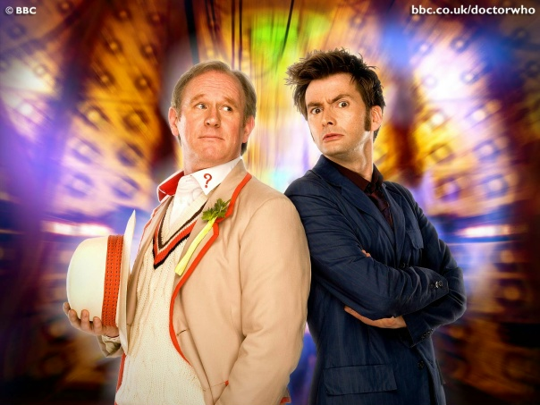

Эра Десятого Доктора
<<< НАЗАД ||| Крушение во времени ||| ДАЛЬШЕ >>>
или
<<< НАЗАД к спин-офф сериалу: Приключения Сары Джейн
MVO [RedDiamond Studio], VO [Кузнецов (BaibaKo)], VO [Любительский]
или Original [ENG]
Субтитры: Русские и Английские

Time Crash
мини-эпизод для "Дети в нужде"
16 ноября 2007
Формат: 8-минутный эпизод
| Варианты озвучек: | * MVO [RedDiamond Studio] * VO [Кузнецов (BaibaKo)] * VO [Любительский] |
|---|---|
| Скачивание и просмотр: |
В мини-эпизоде, написанном Стивеном Моффатом, произошла мимолётная встреча Пятого Доктора с Десятым. Это была первая встреча нескольких воплощений Доктора со времён мини-эпизода «Измерения во времени» (1993), и первое появление Питера Дэвисона в роли Пятого Доктора на ТВ со времён этого же мини-эпизода.

